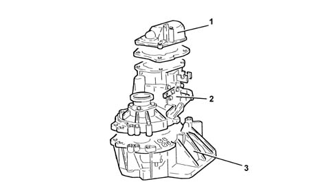
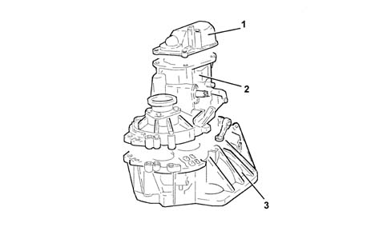
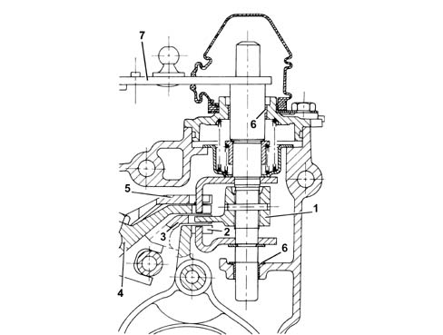
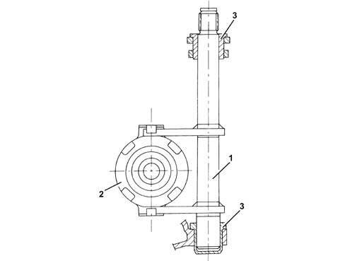

2110C gear cases and covers of manual gearbox with differential
- Path
- Descriptions > 21 GEARBOX > 2110 MANUAL GEARBOX AND DIFFERENTIAL > 2110C gear cases and covers of manual gearbox with differential
- Kind
- system description
- Applies to
- all engines; all production periods
- Interactive page
- https://sloeber94.github.io/elrnDB-a147/en/#/3022464
Applies to: engines: 1.6 TS; all production periods
CONSTRUCTION FEATURES
The structure of the gearbox consists of:
- gearbox casing which contains and supports the main and layshafts, rods and gear selector forks and the gear selector and engagement device.
- a rear cover which contains the 5th speed gears, the 5th speed engagement fork and the rear bearing retaining plate for the main and layshafts
- the bell housing which contains the clutch and the engagement and release device.

1 - Gearbox casing cover 2 - Gears and differential housing 3 - Bell housing
Applies to: engines: 2.0 TS; all production periods; only with equipment: Cambio robotizzato
CONSTRUCTION FEATURES
The structure of the gearbox consists of:
- gearbox casing which contains and supports the main and layshafts, rods and gear selector forks and the gear selector and engagement device.
- a rear cover which contains the 5th speed gears, the 5th speed engagement fork and the rear bearing retaining plate for the main and layshafts
- the bell housing which contains the clutch, the thrust bearing and the control device.

1 - Gear casing cover 2 - Gears and differential housing 3 - Bell housing
Applies to: engines: 3.2 V6; all production periods
COMPONENT DESCRIPTION
GEAR SELECTION/ENGAGEMENT SYSTEM
Specifcations
Type
There are four selection levels for the gear selection/control system with the gear positioner fitted with a bearing.
The system ensures that it is impossible to accidentally engage Reverse gear as it is on a separate level.
System specifications
Two bushes (6) with a Permaglide covering have been used to reduce friction at:
- the couplings between the gear selector/engagement control shaft and the gearbox casing;
- the couplings for the selector fork rods and the gearbox casing.
The bushes make it possible to:
- achieve improved sliding;
- ensure better gear engagement precision.

1 - Selector pawl 2 - 1st - 2nd speed engagement/selector fork 3 - 3rd - 4th speed engagement/selector fork 4 - 5th - 6th speed engagement/selector fork 5 - Reverse gear engagement/selector fork 6 - Permaglide bushes 7- Gear engagement lever
CLUTCH CONTROL
Specifcations
Structure
The clutch control consists of:
- a fork bearing (1) fitted inside the clutch casing;
- a thrust bearing (2) fitted on the main shaft.
The fork bearing is supported by the Permaglide bushes (3) which make it possible to:
- reduce the force required to operate the clutch pedal;
- eliminate the use of grease;
- limit the wear of the coupling.

Applies to: engines: 1.9 JTD 8V, 1.9 JTD 16V; all production periods
COMPONENT DESCRIPTION
GEAR SELECTION/ENGAGEMENT SYSTEM
Specifcations
Type
There are four selection levels for the gear selection/control system with the gear positioner fitted with a bearing.
The system ensures that it is impossible to accidentally engage Reverse gear as it is on a separate level.
System specifications
Two bushes (6) with a Permaglide covering have been used to reduce friction at:
- the couplings between the gear selector/engagement control shaft and the gearbox casing;
- the couplings for the selector fork rods and the gearbox casing.
The bushes make it possible to:
- achieve improved sliding;
- ensure better gear engagement precision.
1 - Selector pawl 2 - 1st - 2nd speed engagement/selector fork 3 - 3rd - 4th speed engagement/selector fork 4 - 5th - 6th speed engagement/selector fork 5 - Reverse gear engagement/selector fork 6 - Permaglide bushes 7- Gear engagement lever
CLUTCH CONTROL
Specifcations
Structure
The clutch control consists of:
- a fork bearing (1) fitted inside the clutch casing;
- a thrust bearing (2) fitted on the main shaft.
The fork bearing is supported by the Permaglide bushes (3) which make it possible to:
- reduce the force required to operate the clutch pedal;
- eliminate the use of grease;
- limit the wear of the coupling.